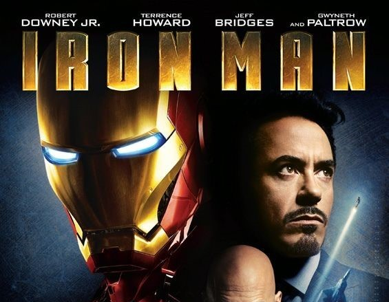
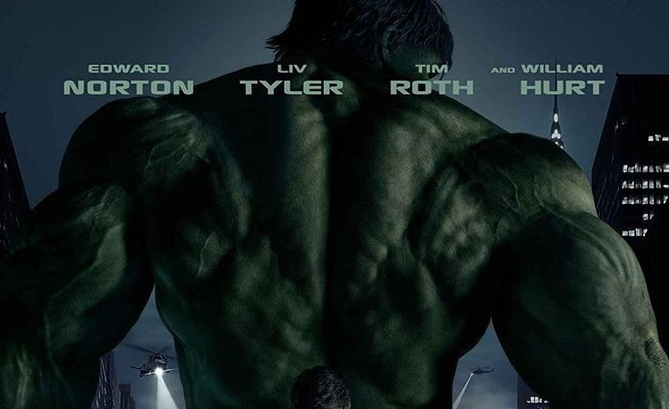
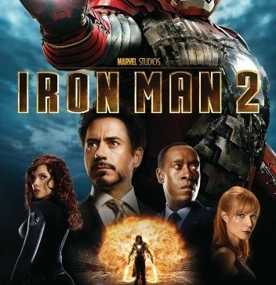

<!DOCTYPE html>
<html>
<head>
    <meta charset='utf-8'>
    <meta http-equiv='X-UA-Compatible' content='IE=edge'>
    <title>Artikel</title>
    <aside class="aside1">
        <br>Waralaba ini telah mencapai kesuksesan secara komersial dan umumnya mendapat tanggapan positif dari kritikus, meskipun beberapa pengulas menemukan bahwa beberapa film dan serial televisi MCU yang telah dirilis mengalami penurunan kualitas demi menciptakan jagat MCU yang lebih luas. Meski begitu, waralaba ini telah mengilhami banyak studio film dan televisi lain yang memiliki hak adaptasi karakter buku komik tertentu untuk mencoba membuat jagat bersama yang mirip. MCU juga telah menjadi fokus untuk berbagai media lain, di luar jagat MCU, seperti wahana-wahana atraksi di taman bermain milik Disney Parks, Experiences and Products, sebuah wahana di Discovery Times Square, pameran Galeri Seni Modern di Brisbane, dua acara televisi spesial, buku panduan untuk setiap film, permainan video Lego, beberapa video game sampingan, dan iklan.
    </aside></p></div>
    <br>
    <aside class="aside2">
    <h1>Iron Man (2008)</h1>
    
    <p>Iron Man adalah film pahlawan super rilisan tahun 2008 yang berdasarkan pada tokoh Marvel Comics, Iron Man. Film yang diproduksi oleh Marvel Studios dan didistribusikan oleh Paramount Pictures ini merupakan film pertama dalam waralaba Marvel Cinematic Universe (MCU). Film ini disutradarai oleh Jon Favreau berdasarkan naskah yang ditulis oleh tim yang beranggotakan Mark Fergus, Hawk Ostby, serta Art Marcum dan Matt Holloway. Film ini dibintangi oleh Robert Downey Jr. sebagai Tony Stark/Iron Man bersama para pemeran lain seperti Gwyneth Paltrow, Terrence Howard, Jeff Bridges, Shaun Toub, dan Gwyneth Paltrow. Dalam film ini, setelah Tony Stark, seorang rekayasawan dan industriawan terkemuka, melarikan diri dari aksi penyanderaan oleh kelompok teroris, ia membangun baju besi mekanis dan menjadi pahlawan super "Iron Man".</p>
    <h1>The Incredible Hulk (2008)</h1>
    
    <p>The Incredible Hulk merupakan sebuah film Amerika Serikat yang dirilis pada tahun 2008. Film ini adalah film kedua di Marvel Cinematic Universe. Film yang disutradarai oleh Louis Leterrier ini pemainnya antara lain ialah Edward Norton, Liv Tyler, Tim Roth, dan William Hurt. Tanggal rilisnya pada 13 Juni 2008.</p>
    <h1>Iron Man 2 (2010)</h1>
    
    <p>ron Man 2 adalah film pahlawan super Amerika Serikat tahun 2010 karya Jon Favreau. Ini adalah film ketiga di Marvel Cinematic Universe. Diangkat dari komik Iron Man karya Stan Lee, film ini dibintangi oleh Robert Downey Jr., Gwyneth Paltrow, Don Cheadle, Scarlett Johansson, dan Mickey Rourke.</p>
</aside>
</head>
</html>